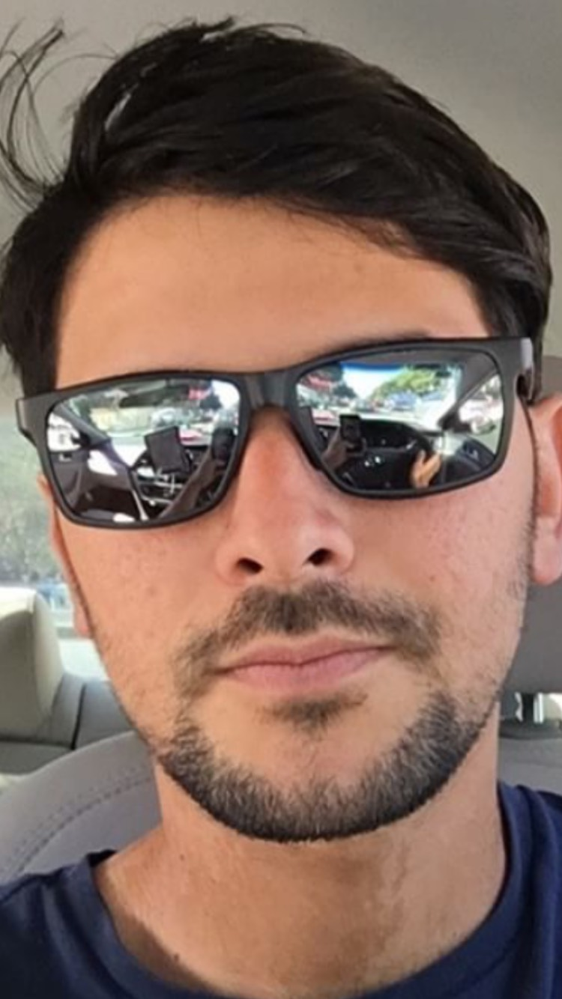

About Me

I'm a Coder BootCamp Student at UC Berkley Extention in San Francisco. My name is Estevao, 28. I like to be called Steeve. The challenge now is to become a Full-Stack-Web-Developer ======> real fun stuff.
In life, I'm looking for to learn things in a magically manner. I like to learn things that makes me happy. I like to help people, I like to have fun. I like to play sports such as soccer, tennis and golf. As weell as learning languages ==> fun stuff.
My favorite book I have read this year (2017) is the Steve Jobs Biopgraphy, to me he is the Greek God - Oops! The Geek God of all time; thus, everybody should be just nearly foolish nearly talented ======> fun stuff.